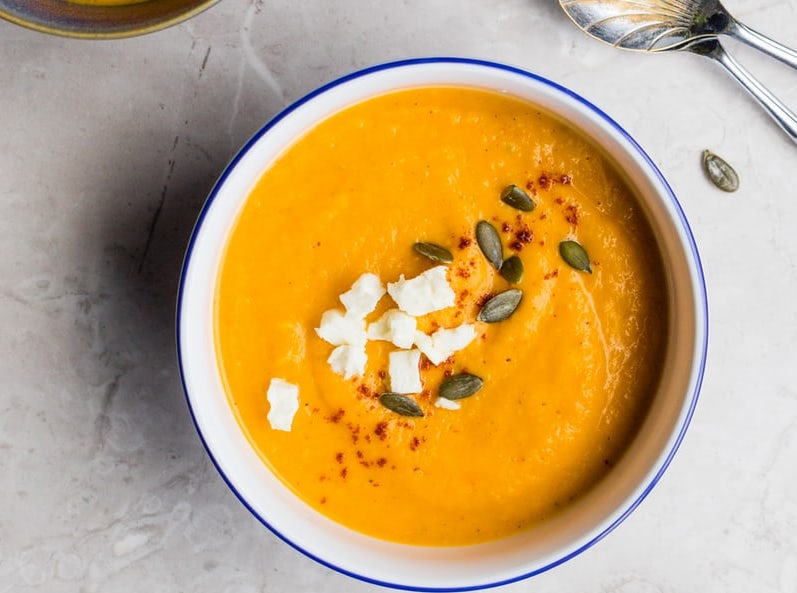

Recept
Bifftacos med lime
Hemmagjort tacobröd med biff
och gurksallad
25 min
Laktosfritt

Pumpasoppa
Vintrig pumpa soppa med
extra sting
25 min
Vegan
Lax med sallad
Ugnsbakad lax med finhackad
grönsakssallad och vinegrett
50 min
Glutenfritt

Hamburgare
Biffburgare med cheddar, karamelliserad lök
och färska grönsaker
40 min
Laktosfritt
Fattiga Riddare
Klassiska fattiga riddare
med sirap och bär
15 min
Laktosfritt

Bärkompott
Yoghurt, granola, passionsfrukt
och sommarbär
45 min
Vegetariskt